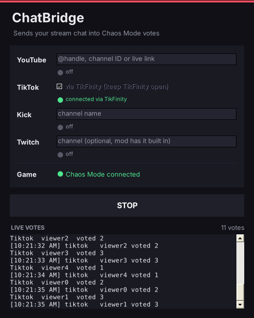

A party mod for Scam With Your Friends. Every minute your viewers vote on what happens next: get tased, lose half the cash, or double every dollar you scam.
Click an option to vote, like your chat would
Real footage from a chaotic shift.
Chat picks one of three. Without chat, a random one fires every 30, 60 or 120 seconds. You can also trigger any of them yourself from the F2 menu.
Turn on Creator Mode and votes run back to back. The winner fires, and the next vote starts five seconds later.
A small Windows app that reads your stream chat and sends the votes into the game. Fill in your channels, press Start, and watch the lights go green.
Let gifts trigger events, with or without chat votes. A Galaxy can end the workday on the spot, a Rose can rain money, and you decide the rest yourself, in the F2 menu or in a plain text file, BepInEx\config\ChaosMode\gifts.txt.
ChatBridge also serves the vote widget as a Browser Source, and TikTok gifts pop up on it as cards. Copy the link, add it in OBS at 480 × 420, and turn off the in-game vote box so viewers only see it once. Using TikTok LIVE Studio? It refuses localhost, so use http://localtest.me:47801/overlay there (ChatBridge prints it when it starts).

Windows, Steam version of the playtest. It runs on BepInEx, which needs a one-time setup.
setup.ps1 in PowerShell with your game folder. The README has the exact line.ChaosMode.dll in the BepInEx\plugins folder and extract the ChatBridge zip into the game folder. Creator Mode stays locked until ChatBridge is installed.Turn off Ragdoll Immunity in the game's settings. It blocks every knock-down effect.
You need to be the host, and the lobby has to be Friends Only or Invite Only.
It isn't code-signed. Click More info, then Run anyway.
Press F2 and open the TikTok Gifts tab: type a gift name, pick an event and press Add this rule. Or open BepInEx\config\ChaosMode\gifts.txt in the game folder, write one rule per line like Galaxy = END DAY, and save. It reloads while the game runs, and the file lists every event you can use.
Open the TikTok Gifts tab in the F2 menu. It tells you what's missing: TikTok gifts switched off, a ChatBridge that's too old, or no rule for that gift. It also shows the last gift it received, and the Test button next to a rule tries it without waiting for a gift. Gifts only fire while a workday is running.
Open TikFinity, log in, and turn on its Event API (port 21213). ChatBridge connects to it automatically.
Delete winhttp.dll, doorstop_config.ini, the ModLoader folder and Mods\ChaosMode.dll from the game folder, then follow the install steps above. The Setup tool leaves old copies alone, and the old ones point at the v1.0 loader.
No. Your timer, vote length, Twitch channel and gift rules are saved in BepInEx\config\ChaosMode, separate from the plugin and ChatBridge. Copy that folder to move your setup to another PC.
Delete ChaosMode.dll from BepInEx\plugins, and the ChatBridge folder if you want it gone too.